Kaum in Fukuoka angekommen, geht es auch schon weiter. Dieses Mal ist die Strecke mit dem Shinkansen wesentlich weiter als zuvor. Um genau zu sein verlassen wir nämlich die südlichste der drei Hauptinseln – Kyushu – und fahren auf die Hauptinsel Japans – Honshu.
Es geht in die Nähe Hiroshimas, aber weiter an die Küste, in eine Kleinstadt namens Onomichi. Dort bleiben wir aber natürlich nicht, nein, nein. Stattdessen leihen wir uns Fahrräder aus und werden in den nächsten zwei Tagen etwa 70 km Rad fahren.
Der Weg führt durch die Seto-Inlandsee und überspannt insgesamt sechs Brücken und sechs Inseln. Ziel ist Imabari, eine Stadt, die auf der kleinsten Hauptinsel Shikoku liegt. Die Strecke führt teilweise durch Nationalparks und ist dafür bekannt, einer der schönsten Radwege der Welt zu sein. Wie könnten wir uns das entgehen lassen?
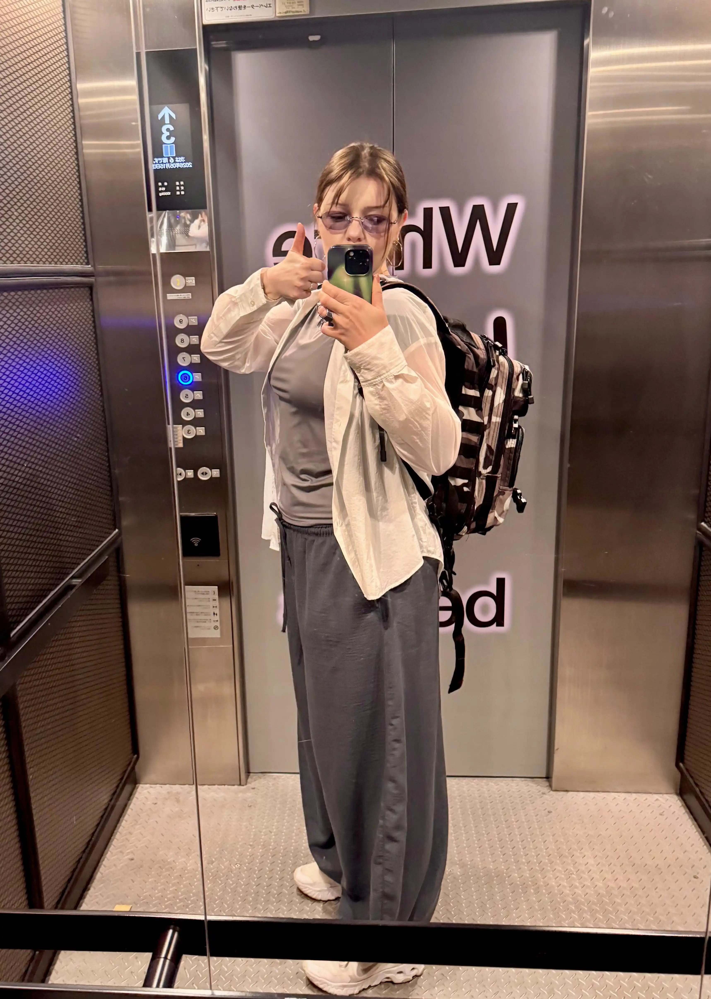
Da wir unsere Koffer schlecht mitnehmen können, verschicken wir sie noch in dem Hotel in Fukuoka mit dem Kuroneko-Gepäckservice. Ein bisschen komisch ist es schon, unser Hab und Gut einfach in die Hände von Fremden zu geben und darauf zu vertrauen, dass wir das Gepäck in zwei Tagen, nach der Radtour in Takamatsu, wieder entgegennehmen.
Unbeschwert steigen wir so, nur mit einem daypack bewaffnet, in den Nozomi Shinkansen.
Es ist der schnellste Shinkansen, der mit ca. 300 km/h durch die Landschaft brettert. Es gibt keine Bahnübergänge, weswegen er nie langsamer werden muss, nur um an den Großstädten zu halten. Auch interessant: Die Shinkansen haben Erdbebensensoren. Sobald ein Beben erkannt wird, oft noch bevor man es als Mensch spüren kann, hält der Zug und schaltet den Strom ab. Erst bei Entwarnung fährt er weiter. Tödliche Unfälle gab es seit der Einführung des Shinkansen 1964 zu den Olympischen Spielen keinen einzigen mit tödlichen Folgen. Damit ist es eines der sichersten Zugsysteme der Welt.
Genau so fühlt es sich auch an, damit zu reisen. Es ist ruhig im Zug, man hat viel Platz und es ist unfassbar sauber. Auf die Minute genau kommen wir an unserem Zielort an, steigen dann noch mal in einen Regionalzug und sind auch schon in Onomichi.
Wir haben kein Fahrrad vorbestellt und obwohl wir relativ früh da sind, ist die Auswahl recht gering. Es gibt zum Glück noch ein E-Bike, aber bei einem Citybike mit Korb für mich hört es auch schon auf. Also wähle ich ein fesches Rennrad, das der Verkäufer mir erst in einer lächerlich kleinen Größe gibt, bis ich ihm klarmache, dass es schon groß genug sein sollte, damit ich die 70 km überstehe.
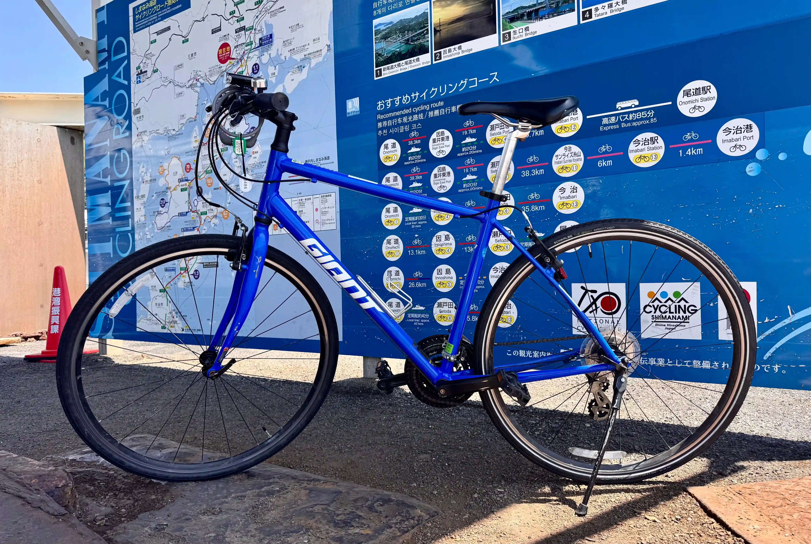
Schließlich schnallen wir unsere beiden Rucksäcke auf Mamas Rad und dann geht es schon auf zur Fähre, um jenseits des Industriehafens die Route zu starten. Ein Niederländer unterhält sich ein bisschen mit uns. Er will die Strecke in einem Tag machen, was wohl viele Reisende tun. Wir hingegen nehmen uns Zeit. Während des Gesprächs bezahlen wir unser Fährticket und der Verkäufer lächelt uns nett an, während er uns als Rückgeld mehr Münzen gibt, als wir bezahlt haben. Irritiert lächeln wir zurück und sehen ihm dabei zu, wie er von dannen schlürft. Eine skurrile Begegnung.
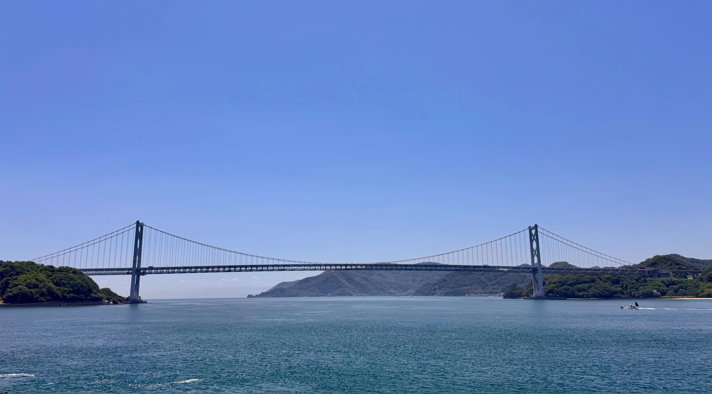
Die erste Strecke führt noch ein Stück durch den Hafen und alle Radfahrer von der Fähre stapeln sich ein bisschen. Das verläuft sich dann aber schnell. Wir lassen uns Zeit und genießen die Landschaft. Der Weg ist blau auf dem Boden markiert, sodass man sich beinahe nicht verfahren kann. Zu unserer Rechten öffnet sich der Hafen und gibt den Blick auf die Seto-Inlandsee frei, mit klarem, knallblauem Wasser. Dahinter sehen wir bereits die erste der sechs Brücken.
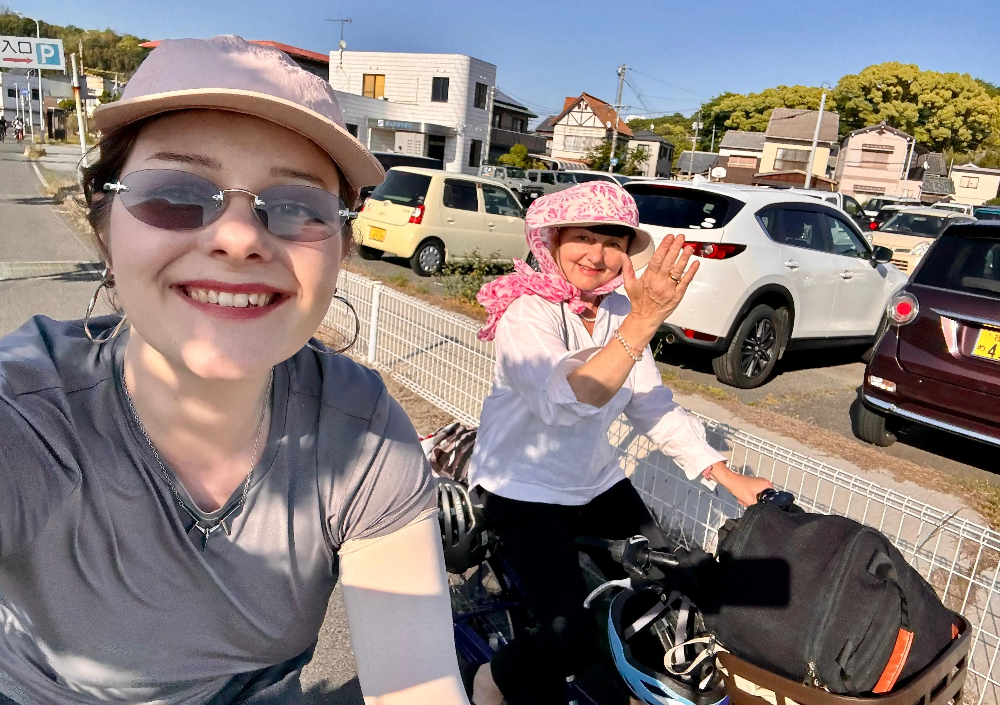
Schon jetzt merke ich, dass es ein heißer Tag wird und packe meine UV-Schutz-Ärmel und die Cap aus, die in den nächsten zwei Tagen mein ständiger Begleiter wird. Mama bindet sich ein Tuch um ihr Gesicht, sodass die Sonne sie kaum berührt.
Über kleine Straßen besichtigen wir die Insel, und der Duft der Orangen wird immer prominenter. Neben dem Fahrradweg ist diese Region nämlich für ihre Citrusfrüchte bekannt. Überall stehen die Bäume und die weißen Blüten tauchen den ganzen Weg in einen wunderbaren Duft.
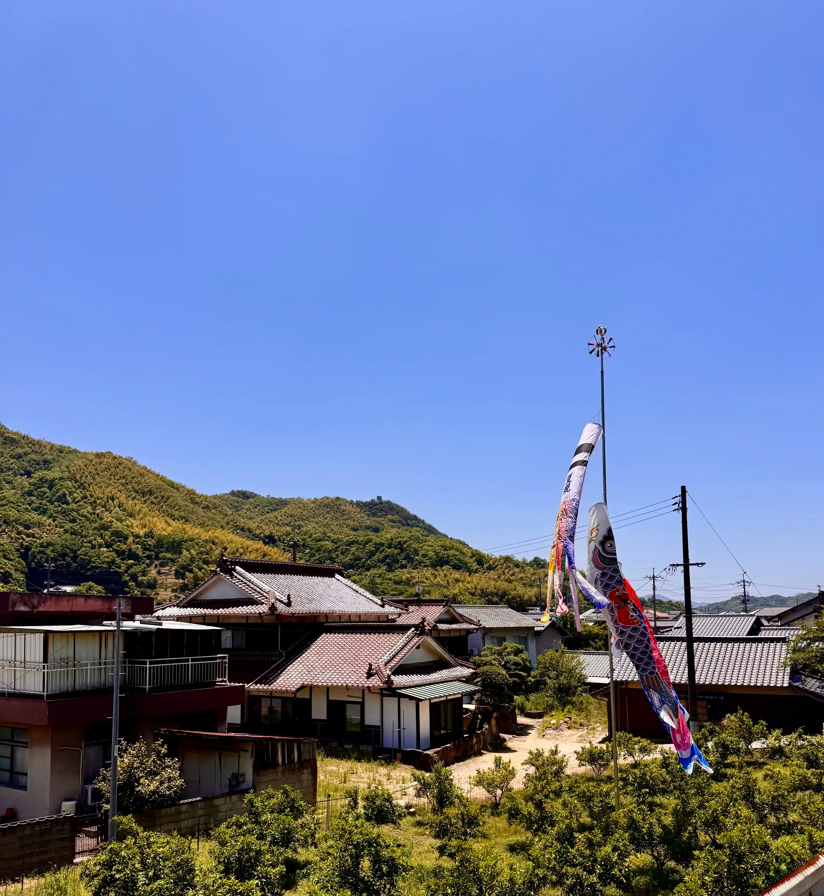
Neben den Orangenbäumen fahren wir auch an Industrie vorbei, die teils immer noch genutzt wird, auch wenn die Anlagen und Hallen vom Wind und Salz in Mitleidenschaft gezogen sind. Immer wieder sehen wir Arbeiter, die schweißen und schwer schleppen. Immer wieder fahren wir auch durch Mini-Ortschaften aus zehn Häusern, die teilweise im einfachen traditionellen Baustil sind, teilweise sehr modern, auch mal protzig und einige zerfallen oder absolut überwuchert. Man merkt, dass es der Industrie nicht gut zu gehen scheint und in dieser Region scheinbar kein großer Reichtum herrscht.
Umso reicher ist sie mit atemberaubenden Aussichten beschenkt. Den Shimanami Kaido als den schönsten Radweg der Welt zu beschreiben fällt dabei leicht. Meine hunderten Fotos können das kaum einfangen.
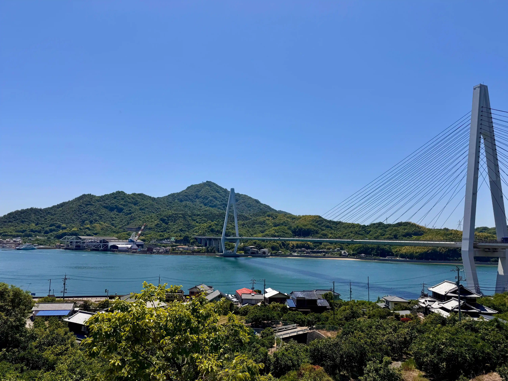
Immer wieder halten wir an und genießen. Von den ersten zwei Brücken machen wir Fotos und dann kommen wir zum Hauptstopp des Tages. Setoda ist ein Küstenstädtchen, das sehr ruhig ist, aber einige Läden ausgelegt auf die Rad-Reisenden hat. Vor allem ist hier das Thema: Zitrusfrüchte. Wer hätte das gedacht? 😁
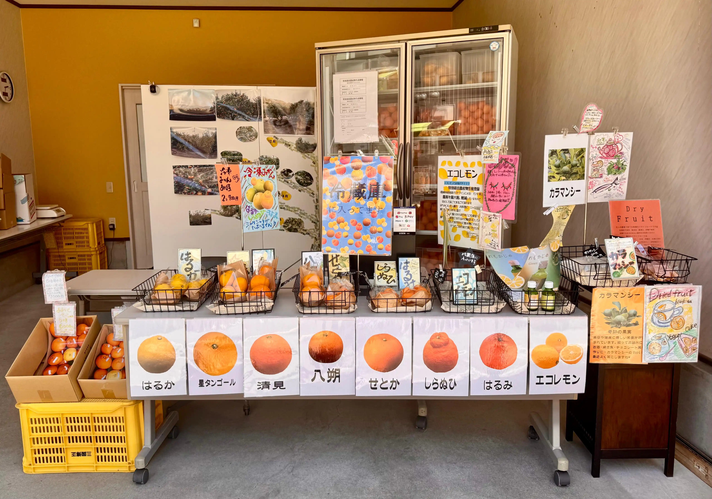
Mama und ich laufen durch die Hauptstraße, die durch alte, einfache Häuser führt und wo es keinen Schutz vor der unnachgiebigen Sonne gibt. Eine ältere Dame lädt uns in ihren Laden ein, wo alles gelb ist. Alles, was man sich vorstellen kann, ist mit Zitronen versehen. Kekse, Saucen, Nudeln, Tischdecken, Seife … Wir kaufen ein paar kleine Souvenirs und die Besitzerin schenkt uns einen Zitronenkeks als Dank.
Die Straße endet an einem kleinen Boulevard mit einem kleinen Schrein, der in der Sonne brütet. Um der Hitze entgegenzuwirken, kehren wir in einem kleinen, erstaunlich modernen Café ein und gönnen uns eine hausgemachte Zitronen-Limonade. Sie ist erstaunlich sauer und bitter, aber die Eiswürfel tun gut.
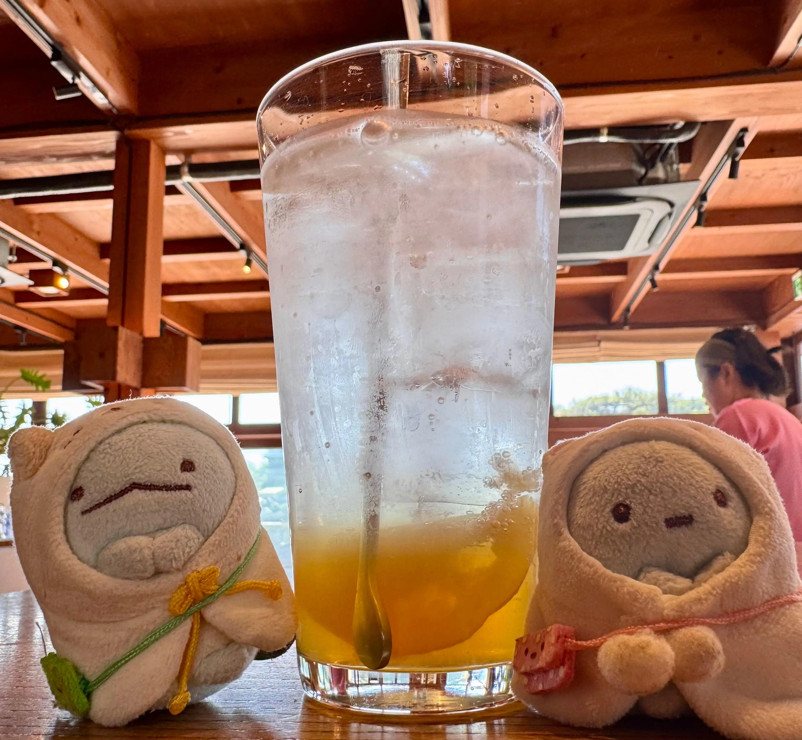
Die Tour hat uns ganz schön erschöpft und so bleiben wir eine Weile. Einige der anderen Gäste haben wir bereits auf ihren Rädern gesehen. Viele haben trotz des langsamen Tempos (und oft auch eines langsameren Tempos als wir) eine volle Radmontur an, fahren dann aber auf komplett falsch eingestellten Rädern.
Das Kondenswasser der Gläser tropft auf den großen rustikalen Holztisch und ein Windspiel klimpert leise. Langsam trocknet unser Schweiß. Doch Hunger haben wir immer noch und so suchen wir uns am Anfang der Straße einen Ramen-Laden, der spezielle Suppe verkauft. Das Besondere? Na? Zitronen natürlich! Die Suppe schmeckt schon nach Schwein, aber die leichte Zitronennote balanciert das Ganze aus. Wir schlürfen genüsslich die Nudeln in uns rein – natürlich landet etwas von der Suppe auf meinem Oberteil.
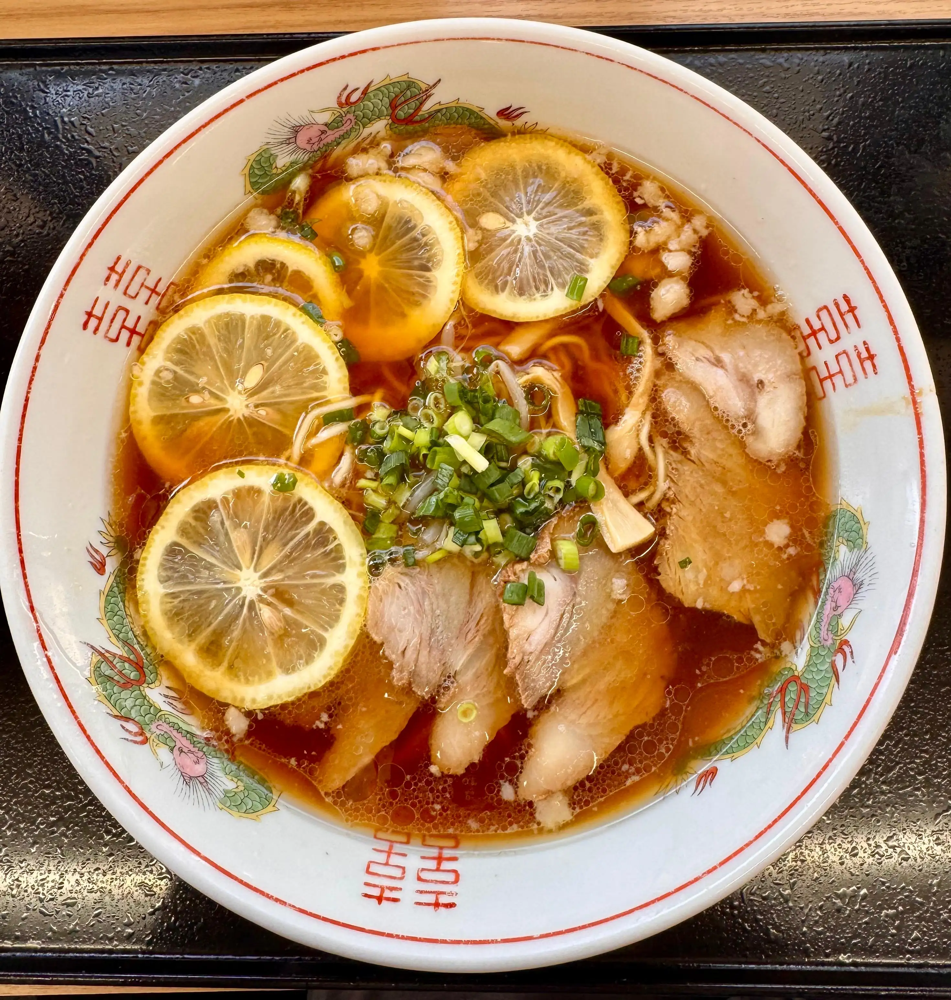
Schließlich kaufe ich uns noch zwei Kugeln Eis, eins mit Sommer-Orange, die ebenfalls sehr bitter ist, und nach einem Tipp online Salz-Geschmack. Das milchige Eis ist sehr salzig, aber auch süß. Ein bisschen wie gesalzenes Karamell, aber nicht so intensiv im Geschmack.
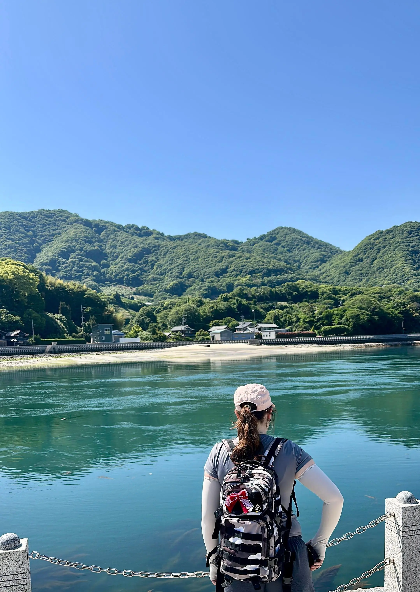
Wir setzen uns an den Eingang einer Tempelanlage und genießen noch einmal die Ruhe des Nachmittags. Ein älterer Mann schiebt seinen noch älteren Hund in einem Buggy durch die Anlage. Er trägt einen Hut von The North Face (der Hund, nicht der Mann!) und sieht alles in allem sehr zufrieden aus. Da es in Japan nicht sehr barrierefrei ist, helfe ich den beiden Herrschaften die Stufen herunter und sehe zu, wie sie von dannen schieben.
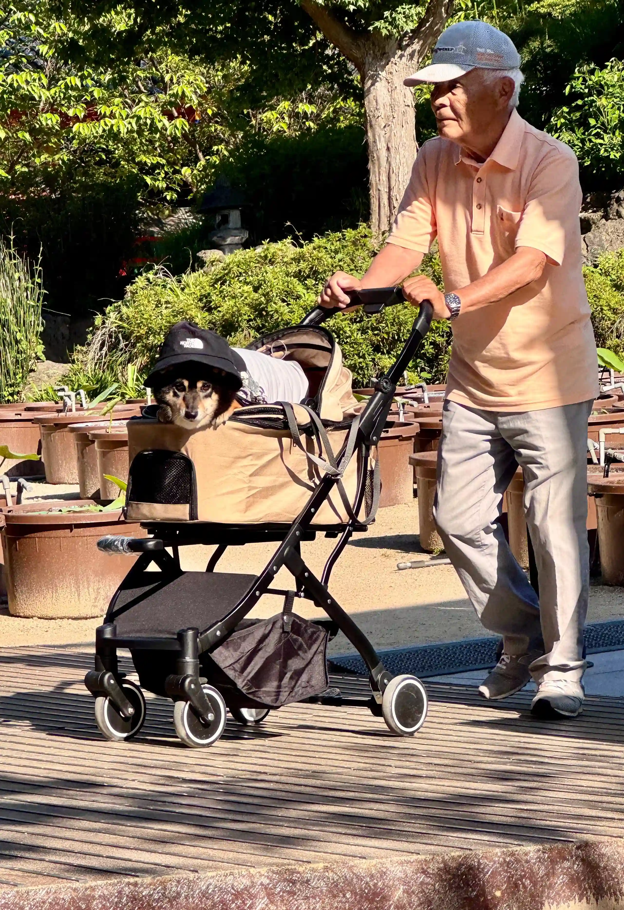
Früher oder später heißt es dann aber doch: Räder besteigen und die letzte Brücke erklimmen, um zu unserer Unterkunft zu kommen. Zur Abkühlung halten wir noch mal am Sunset Beach. Dort kann man – könnte man – wunderbar schwimmen gehen, mit Blick auf die Brücke. Mama hat an einen Badeanzug gedacht, ich begnüge mich damit, bis zu den Knien im Wasser zu waten. Die Wellen plätschern ruhig an den Strand und Schulkinder spielen mit dem Ball und ärgern sich gegenseitig. Winzige Fische huschen um meine Füße. Was für ein Abend!
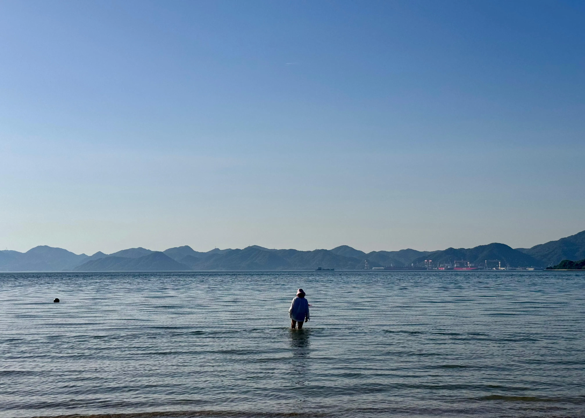
Unser Hostel liegt unweit von der dritten Brücke entfernt. Es ist auf Rad-Touristen ausgelegt und hat entsprechend viele Fahrradständer. Wir schlafen zwar in einem Zweierzimmer, der Begriff ist allerdings irreführend. Eigentlich ist es eine riesige Halle und die Kabinen sind mit einer Art vertikaler Jalousie von dem Rest abgeteilt. In den Abteilen sind absurd hohe Doppelstockbetten. Ich schlafe natürlich oben und schmeiße alles, was ich brauche, hoch.
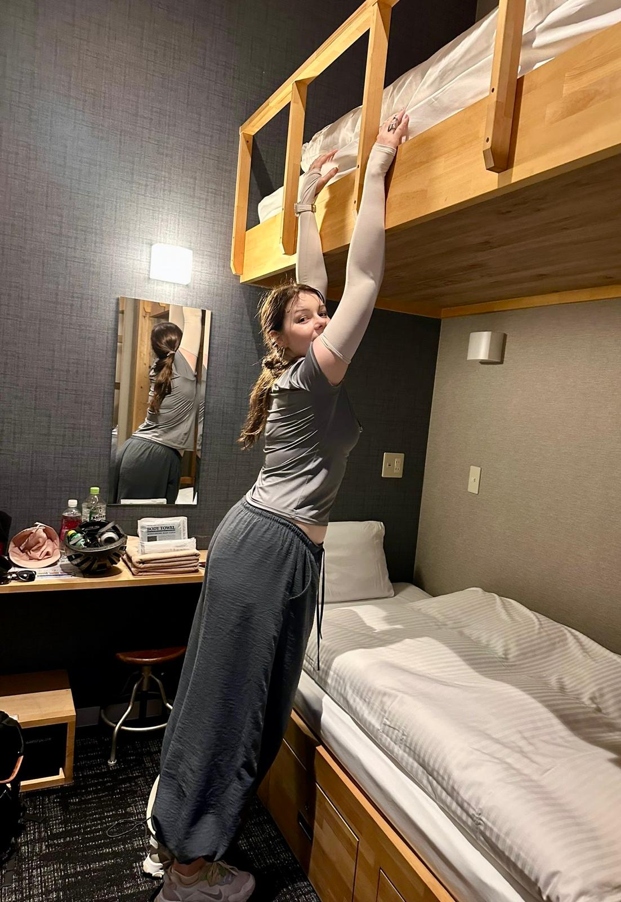
Es ist noch früh, deswegen kaufen wir uns noch Bier und Abendbrot bei dem wohl schönsten 7-Eleven Japans. Er hat nämlich einen Essbereich draußen, wie einen Picknickbereich, mit Blick auf das Meer und die gigantische Brücke, die über dem Tal wacht. Wir schlagen uns die Bäuche mit Salat, Sandwich und Eis voll und lauschen einer kleinen Gruppe Amerikanerinnen neben uns. Wir fangen sogar ein kurzes Gespräch mit ihnen an.
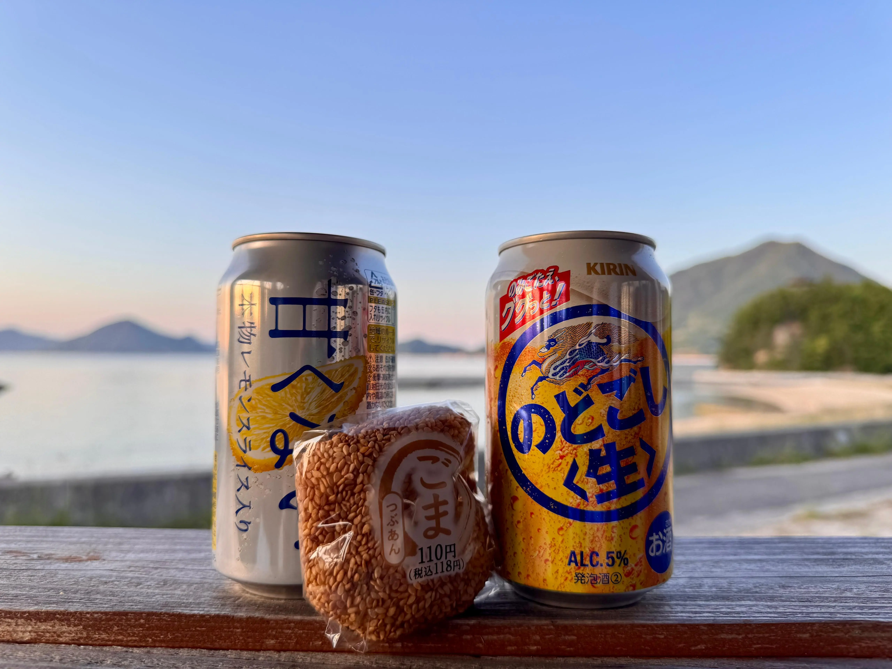
Ameisen bilden eine Autobahn zu unseren Krümeln und irgendwann wird es dunkel und die Nacht zieht über die Brücke in unsere Bucht. Die Zeit der Mücken beginnt und so ziehen wir uns zurück und klettern in unser Bett.
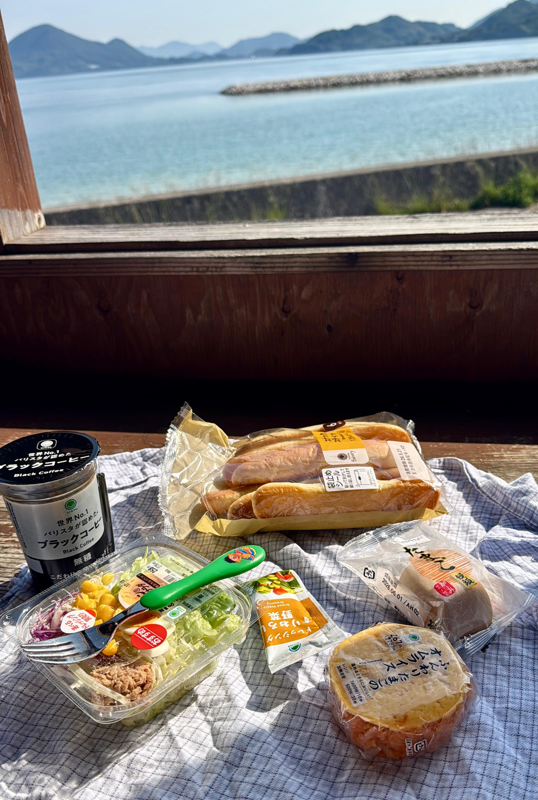
Der nächste Tag unserer Tour startet entspannt. 40 km haben wir geschafft, 30 bleiben. Wir essen entspannt Frühstück bei dem 7-Eleven am Wasser und fahren dann los. Vorbei an der Küste und Orangenbäumen. Sie hängen voll mit Früchten und Mama steigt natürlich ab, um sich eine zu pflücken. Erst als wir uns wundern, warum uns so wenig Radfahrer bislang begegnet sind, realisieren wir, dass wir in die falsche Richtung gefahren sind.
Statt dem Shimanami Kaido zu folgen, haben wir die halbe Strecke einer Inselrundfahrt gemacht, die blöderweise ebenfalls blau auf dem Boden markiert ist.
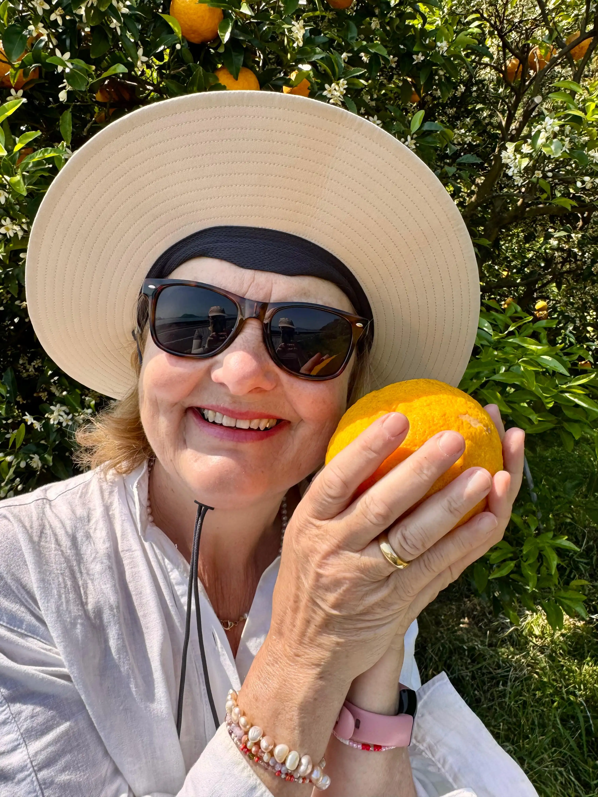
Es heißt also: Wieder zurück und noch einmal ein Trost-Eis bei dem 7-Eleven essen. Und dann aber dieses Mal wirklich weiter. Inzwischen ist es beinahe Mittag und die Sonne brennt. Dieser Teil hat wesentlich mehr Steigung und ich ohne Motor bin ein-, zweimal wirklich am Ende meiner Kräfte. Außerdem schwitze ich. Ekelig.
Die Ausblicke sind nach wie vor atemberaubend. Auf den Brücken fühlt man sich wie eine Königin über der Welt, unten am Wasser kann man das Salz riechen und die Strudel sehen. Die Seto-Inlandsee war früher ein bekanntes Versteck von Piraten. Andere Seeleute konnten bei der Strömung kaum navigieren. Noch heute sehen die Strudel beeindruckend aus und so, als wenn selbst Motorboote sich anstrengen müssten, sie zu überwinden. Mit entspannt schwimmen ist da nichts mehr.
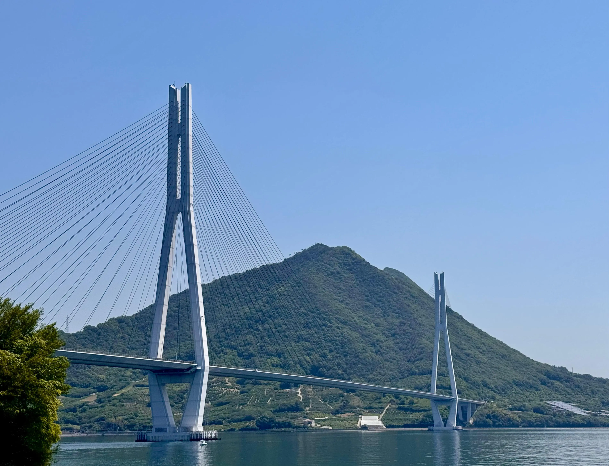
Die Ortschaften, die wir durchqueren, sind auch hier teilweise runtergekommen, aber voller Charme. Man kann die kleinen Vorgärten sehen und uralte kleine Läden. Steinmetze stellen ihre Werkstücke aus und wir sind dankbar, als wir endlich einen richtigen Supermarkt sehen. Wir orgeln uns einen fetten Crêpe-Kuchen und eine Erdbeermilch rein. Mir geht es danach ein bisschen schlecht, aber nach all der Anstrengung hilft der Zuckerschock. Scheinbar sehen wir vor unserem Snack genau so aus, wie ich mich gefühlt habe, denn drei junge Männer sind von ihren Plätzen am kleinen Tisch vor dem Supermarkt aufgesprungen, um uns Platz zu machen.
Kurz vor dem letzten Highlight machen wir noch einmal Fotos und werden von einem japanischen Radrennfahrer angesprochen, der anbietet, ein Foto von uns zu machen. Scheinbar ist er auch ein bisschen an Smalltalk interessiert, denn er erzählt, dass er aus Imabari kommt, dem Ort, den wir bald erreichen und der das Ende des Shimanami Kaido markiert. Scheinbar fährt er den Weg besonders gerne im Winter, da dort der Wind stark und die Strecke besonders gut zum Trainieren ist. Ich verkneife mir, dass mir die Anstrengung auch ohne Gegenwind reicht und wir wünschen ihm viel Spaß auf seiner Tour.
Die letzte Strecke führt zum Glück bergab. Auf die letzte Brücke zu. Oder eher, die Brücken. Die Kurushima-Kaikyō-Brücke sieht nämlich aus wie eine, besteht aber eigentlich aus drei Teilen. Auch sie wird an Seilen gehalten und spannt bis zum Horizont auf das „Festland“ der Insel Shikoku. Vier Kilometer Brücke, bis zu 80 Meter über dem blauen Meer. Mit dieser Länge war das Konstrukt die längste Hängebrücke der Welt, als sie 1999 fertiggestellt wurde.
Dementsprechend gibt es kleine Haltepunkte, an denen man sich kurz ausruhen und die Landschaft genießen kann. Das nutzen wir natürlich. Ich stelle mir vor, wie vor hunderten von Jahren Piraten sich in den vielen kleinen Inseln versteckt haben und jetzt fahren wir hoch über der Landschaft neben den LKW und Autos über ihr Reich.
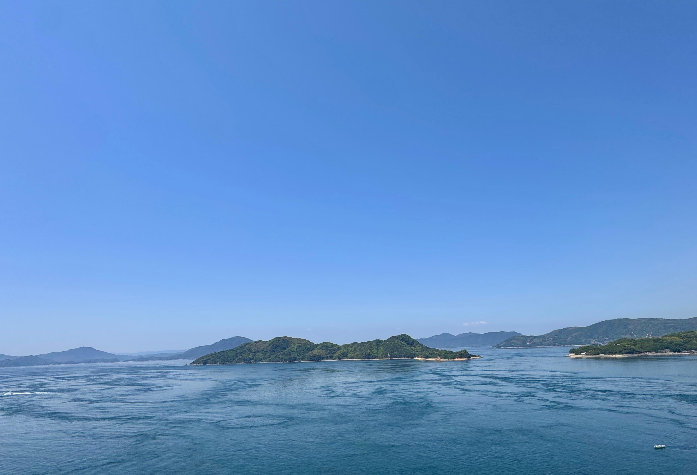
Ein letztes Mal die Landschaft genießen, dann düsen wir in Spiralen von der Brücke hinunter, an die Küste Imabaris. Erneut hält uns ein älterer Mann am Festland an. Ich denke erst, dass er wissen will, wo der Weg langgeht, doch er hat etwas anderes vor: Und zwar lernt er scheinbar auch Englisch und hat eine Freude daran, ausländischen Touristen einen guten Ort für ein Erinnerungsfoto zu zeigen. Er erkennt unsere kritischen Blicke schnell, denn er erklärt direkt, dass es nur 50 Meter entfernt ist und natürlich nichts kostet. Wir fahren ihm das kurze Stück hinterher und er hatte recht: An einem Parkplatz ist „Shimanami“ in riesigen Holzbuchstaben aufgebaut, dahinter die Kurushima-Kaikyō-Brücke. Zufrieden mit Mamas und meiner Reaktion macht der Mann ein Foto von uns und zieht von dannen, um an derselben Stelle auf die nächsten Touristen zu warten.
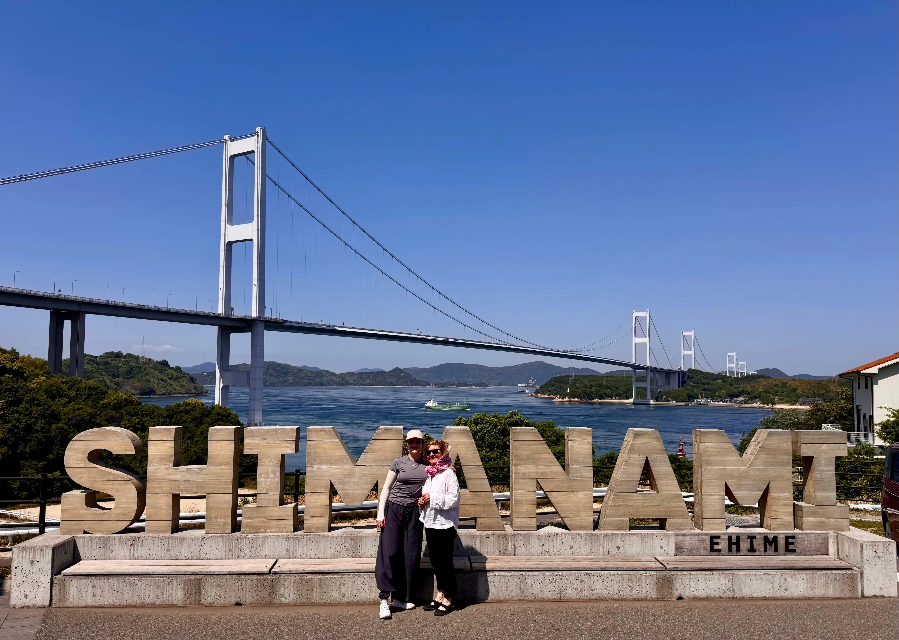
Die Strecke zum Bahnhof, wo wir unsere Räder abgeben, ist wohl der hässlichste Teil der Strecke. Man fährt auf einer Schnellstraße acht Kilometer geradeaus. Wir denken bereits, dass wir falsch sind, dann endlich sehen wir den Bahnhof. Die Abgabe der Räder ist absolut unkompliziert und nach fünf Minuten sind wir bereits am Kartenschalter.
Dafür kommt da der Stress: Der nächste Zug fährt in fünf Minuten, der danach in einer Stunde. Außerdem ist er viel langsamer als der erste und so rennen wir zum Gleis. Zum Glück hat der Zug tatsächlich skandalöse fünf Minuten Verspätung und wir verschnaufen kurz.
Dann fährt der Zug ein. Aber es ist kein normaler Zug, oh nein. Erinnerst du dich an den Aso-Boy-Zug in Kumamoto? So ähnlich ist dieser hier auch, bloß dass er in einen Farbtopf gefallen ist. Schrillbunte Farben fahren an uns vorbei und halten quietschend am Gleis. Der Zug ist im Anpanman-Theme, ein Anime und Manga aus den 70ern, der von einem knuffigen kleinen Superhelden handelt. Auch innen ist alles bunt bemalt mit Charakteren der Serie.
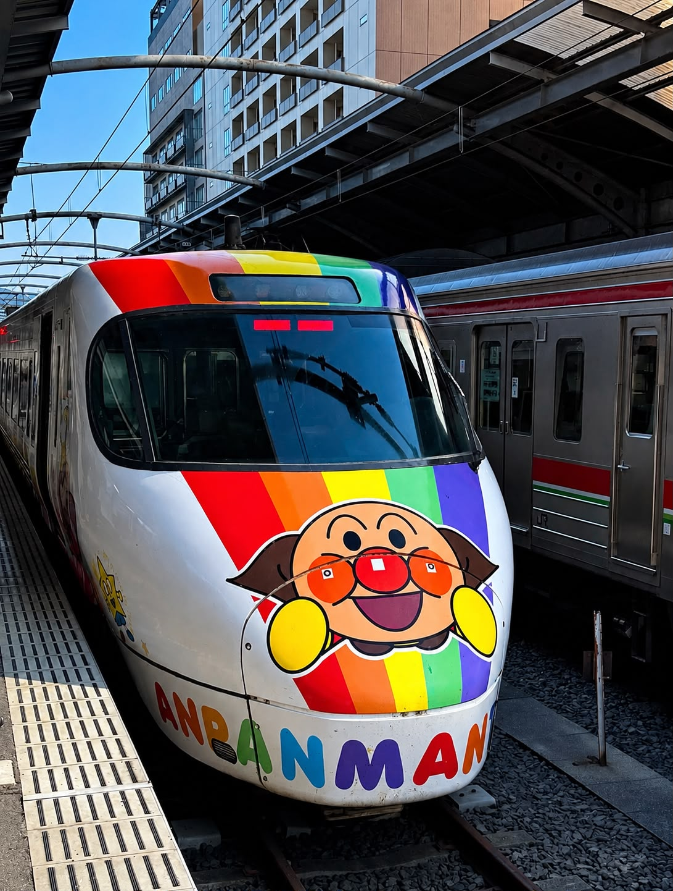
Man merkt aber, dass Shikoku die Hauptinsel mit den wenigsten Touristen ist, denn hier ist alles etwas älter als auf Kyushu. Die Sitze und vor allem auch die Türklinken des Zuges stammen aus einer Zeit, in der die Leute scheinbar noch kleiner waren, denn sie befinden sich auf meiner Hüfthöhe. Ich komme mir ein bisschen riesig vor.
Die Landschaft rattert so dahin, mal durch Vororte, mal am Meer entlang. Wir fahren eine Stunde lang gen Norden, nach Takamatsu. Unser Hotel liegt direkt am Bahnhofsplatz. Es gibt ein Wasserbecken und Bäume sind daneben gepflanzt, Menschen schlendern über den Platz und geradezu, sodass man praktisch hineinfällt, ist unser Hotel. Gut, wir gehen erst in das falsche der zwei Gebäude, aber theoretisch ist der Fußweg vom Bahnhof zum Hotel eine Minute.
Der Höhe des Gebäudes entsprechend grandios ist unsere Aussicht: Wir schauen auf den Hafen, der direkt auf der anderen Seite des Hotels liegt, auf die Burganlage daneben mit einem großen Park und die Stadt mit den Bergen im Hintergrund. Wir sind im 19. Stock und die Menschen und Straßenbahnen sehen aus wie in einem Computerspiel. Das Zimmer ist extrem geräumig und war trotzdem günstig. Man merkt, dass sich nicht allzu viele Touristen hierher verirren.
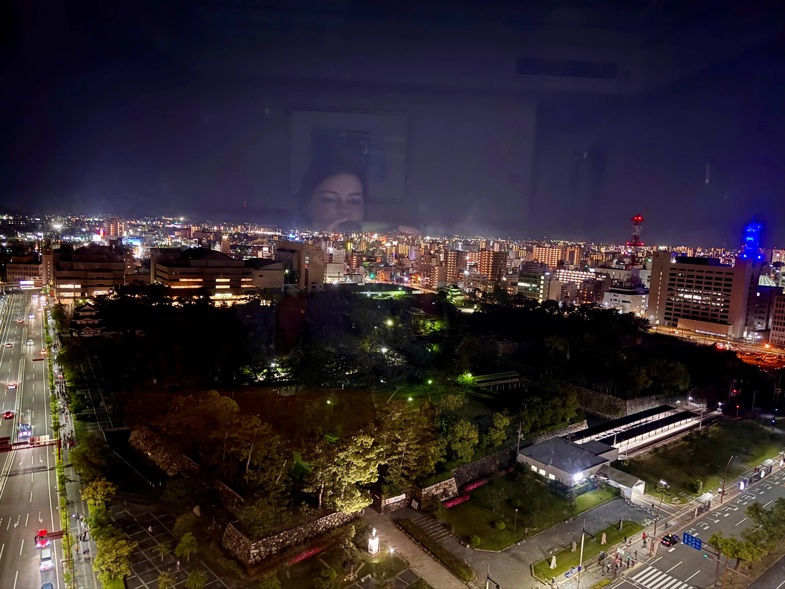
Auch wenn Mama und ich ziemlich fertig sind, gehen wir zum Abschluss des Tages noch einmal essen. Nach viel Sucherei einigen wir uns auf eine Restaurantkette in der Mall von Takamatsu, die aus schier endlosen überdachten Straßen besteht, mit Läden, die tatsächlich zum ersten Mal in Japan nicht zum Innehalten und Shoppen anhalten. Es gibt Nudelsuppe und frittierten Tofu. Zum Nachtisch stoppen wir in einem 7-Eleven und holen uns unser Lieblingseis: Vanille-Mochi-Eis, mit zwei mit Eiscreme gefüllten Teigtaschen in einer Packung. Der Abend klingt mit dem Blick auf die Skyline ruhig aus, während wir noch immer an das Meer und die Zitronen vom Shimanami Kaido denken.